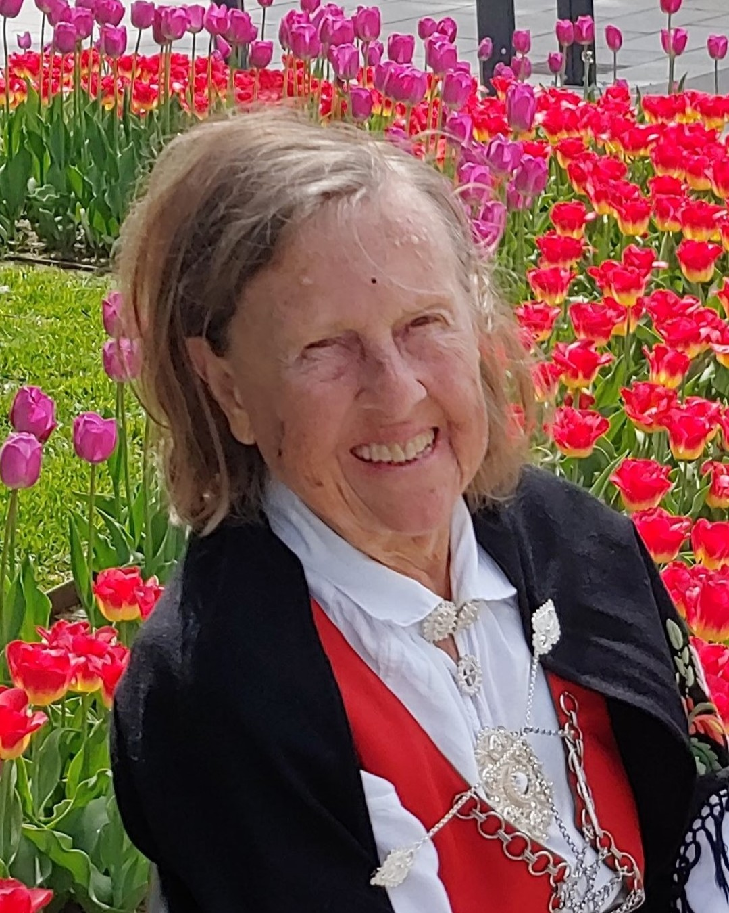

Thor Einars elskede kone og vår hjertegode og omsorgsfulle mor Kirsten Helene forlot oss plutselig torsdag 11. desember, 95 år gammel. Vi sørger over tapet av en enestående, klok og varm mor, og trøster oss med at hun fikk et langt, godt og rikt liv. Hun beholdt sin livsglede og takknemlighet helt til det siste, også når den høye alderen satte sine spor hos henne. Vi er dypt takknemlige for all kjærlighet og varme hun spredte rundt seg, og alt det gode hun gav oss gjennom et langt liv. Hun har satt gode, dype spor hos sine svigerdøtre og barnebarn, og rakk å få fem oldebarn. Nå har hun fullført løpet, og bevart troen. Hvil i fred, kjære mamma.
Kirsten Helene Hanisch, født Knutsen, vokste opp på Brønnstykket i Kristiansand, som eldst av fem søsken. Hun begynte tidlig å jobbe som sekretær og stenograf ved KMV, Falconbridge og hos Siviling. Lindboe i Kristiansand, og hos Bergen Brann og Norsk Assuranseunion i Oslo. I Oslo tok hun samtidig artium på to år som privatist ved Oslo katedralskole. Senere tok hun eksamener ved Agder musikkonservatorium og Kristiansand lærerskole, og engelsk og nordisk ved Agder distriktshøyskole, i samarbeid med UiB. Kirsten elsket litteratur og skrev hovedoppgave i nordisk om Sigmund Skards kjærleikslyrikk. Som adjunkt og etter hvert lektor ble Eg, Kvadraturen og Gimle videregående skoler i Kristiansand arbeidsplassene fram til pensjonsalderen. Som pensjonist viste hun stor interesse for slektsgransking, og for sørlandsdikterne som hun også har presentert i NRK’s «Sangtimen». Kirsten og Thor Einar er æresmedlemmer av Gabriel Scott Selskabet. De ledet Selskabet i fire år, og har deretter vært redaktører og journalister i selskabets publikasjon «Treskoposten». Helt til sin siste dag var hun aktiv i Senioruniversitetet i Kongens Senter, Berges Hus Seniorsenter, BUL og Mållaget. Hun var en trofast kirkegjenger, ikke minst i Oddernes kirke og Søm kirke. Kirsten og Thor Einar feiret sitt krondiamantbryllup i 2023 sammen med hele sin storfamilie.

Vi tre sønner og familier vil alltid tenke med takk på vår kjære mamma, svigermor og farmor. Hun var varm og omsorgsfull, og spurte etter oss alle. Ti barnebarn og fem oldebarn fylte henne med dyp glede og takknemlighet, og hun satte stor pris på å være sammen med dem. Kirsten tok oss alle med i sin aftenbønn gjennom alle år.
Kirsten var familiekjær, og som eldste søster hadde hun mye kontakt og jevnlig samvær med sine søstre Sonja, Bjørg og Grethe og sin bror Yngve, og deres ektefeller. Hun satte stor pris på familiesamlinger og besøk av sine nieser og nevøer. Kirsten var glad i livet og alt levende, som hagens blomster og trær, småfugler og ekorn. Hun elsket sang og musikk, og gledet oss og seg selv med sanger og pianospill gjennom hele livet.
For oss tre sønner har det alltid vært godt å komme og være sammen med mamma og pappa i huset hvor vi vokste opp, lekte og lærte. Huset med de store furutrærne i hagen, panoramautsikten over Topdalsfjorden mot Kjevik, og en stor og frittvoksende hage.
Mamma fikk bo i sitt kjære hjem på Kongsgård 2 helt til det siste. Hun døde brått hjemme i stua si 11. desember 2025, og Thor Einar var hos henne da hun gikk ut av tiden.
Kirsten Helene Hanisch ble begravet fra Oddernes kapell 30. desember 2025, med en stor flokk av familie, slekt og venner til stede. Thor Einar holdt selv en flott minnetale for sin kjære kone. Rolf Erik var forrettende prest, og ledet den vakre seremonien. Tore Ljøkjel spilte nydelige toner på saksofon, og Reidar Skaaland likedan på orgel.
Kirsten er dypt savnet av Thor Einar, sønner, svigerdøtre og barnebarn: Rolf Erik og Hilde Gunn med Erika, Kristian, Ragni og Erlend Jan Petter og Kari med Kjersti og Eirin Thor Kristian og Ingun med Matias, Halvard, Aksel og Karina
Med takknemlighet bærer vi med oss videre i livet vår inderlig kjære ektefelles og gode mors store kjærlighet til oss alle.
Thor Einar, Rolf Erik, Jan Petter og Thor Kristian